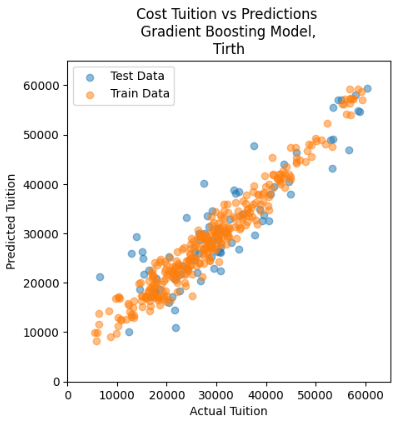

College Tuition Predictor
A collaboratory effort to correctly predict college tuitions based on various features
In this project, as a team, we developed a College Tuition Predictor using advanced machine learning techniques, including Gradient Boosting Regressor (GBR), Neural Networks, and Decision Trees. The goal of this project was to create a predictive model that can accurately estimate the tuition fees of colleges based on various input features such as location, institution type, enrollment size, and other relevant factors. We utilized techniques like PCA, feature selection, feature enginerring, k-fold cross validations to effectively use the available data.